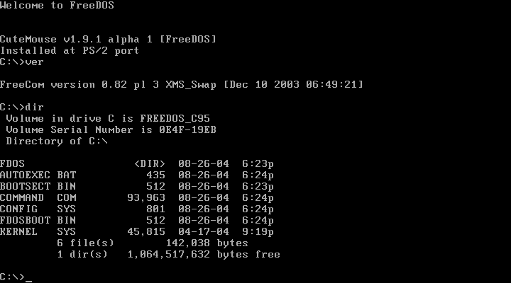

Alan Abramowski
Klasa 1 TIF
DOS (od ang. disk operating system) – pierwszy przenośny (dyskowy) system operacyjny w mikrokomputerach lat osiemdziesiątych, zawierający między innymi rozszerzenia programowe procedur sprzętowych BIOS-u oraz interpreter poleceń. Dla DOS zapożyczono i rozwinięto niektóre elementy z systemów klasy CP/M.
W komputerach osobistych DOS nie ma wbudowanych mechanizmów ochrony pamięci (nie istnieją mechanizmy ochrony pamięci w trybie rzeczywistym procesora x86, w którym pracuje DOS) – z tego względu nie jest systemem bezpiecznym dla danych i procesów wymuszanych sztucznie wielopotokowo lub sieciowo. W zamyśle był to jednowątkowy system operacyjny i nie przewidywano w nim uruchamiania więcej niż jednego procesu (programu) jednocześnie. Była jednak możliwość uruchamiana programów w tle, np. do obsługi urządzeń.
Programy DOSowe mogą być uruchamiane w systemie Windows, OS/2, Linux (poprzez program DOSBox lub DOSemu). Istnieją obecnie darmowe implementacje tego systemu, na przykład FreeDOS. Ponieważ od systemu Windows XP programy DOS-owe są uruchamiane na tak zwanej wirtualnej maszynie DOS-owej (VDM), która nie pozwala na bezpośredni dostęp programu do sprzętu i posiada jeszcze inne ograniczenia, to działają wyłącznie te, które takich odwołań nie wykonują i nie ingerują zbytnio w system. Do nich należą głównie programy użytkowe, przykładowo edytory tekstu, i bazy danych.
Systemy tej klasy były stosowane w pierwszych komputerach domowych.
